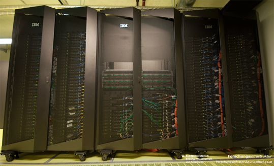
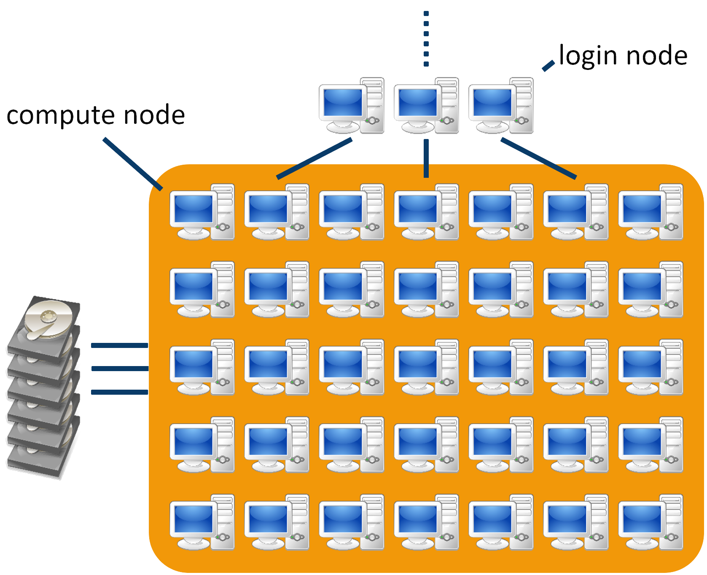

## 703078 PS Parallel Programming - Introduction & Administrative Stuff Philipp Gschwandtner, Abolfazl Younesi, Marlon Etheredge, Gabriel Mitterrutzner --- ## Instructor information - Philipp Gschwandtner (Group 1, 10:15-11:00, RR 15) - philipp.gschwandtner@uibk.ac.at - <img src="https://cdn.prod.website-files.com/6257adef93867e50d84d30e2/653714c174fc6c8bbea73caf_636e0a69f118df70ad7828d4_icon_clyde_blurple_RGB.svg" style="vertical-align:middle; height:30px"> philgs - Abolfalzl Younesi (Group 2, 11:15-12:00, RR 15) - abolfazl.younesi@uibk.ac.at - Abolfalzl Younesi (Group 3, 12:15-13:00, RR 15) - abolfazl.younesi@uibk.ac.at <!-- - <img src="https://upload.wikimedia.org/wikipedia/commons/3/31/Discord-icon-svgrepo-com.svg" style="vertical-align:middle; height:30px"> philgs --> - Marlon Etheredge (Group 4, 12:00-12:45, RR 22) - marlon.etheredge@uibk.ac.at <!-- - <img src="https://upload.wikimedia.org/wikipedia/commons/3/31/Discord-icon-svgrepo-com.svg" style="vertical-align:middle; height:30px"> _skimax_ --> - Marlon Etheredge (Group 5, 13:00-13:45, RR 22) - marlon.etheredge@uibk.ac.at <!-- - <img src="https://upload.wikimedia.org/wikipedia/commons/3/31/Discord-icon-svgrepo-com.svg" style="vertical-align:middle; height:30px"> _skimax_ --> - Gabriel Mitterrutzner (Group 6, 14:00-14:45, RR 22) - gabriel.mitterrutzner@uibk.ac.at <!-- - <img src="https://upload.wikimedia.org/wikipedia/commons/3/31/Discord-icon-svgrepo-com.svg" style="vertical-align:middle; height:30px"> _skimax_ --> - Gabriel Mitterrutzner (Group 7, 15:00-15:45, RR 22) - gabriel.mitterrutzner@uibk.ac.at <!-- - <img src="https://upload.wikimedia.org/wikipedia/commons/3/31/Discord-icon-svgrepo-com.svg" style="vertical-align:middle; height:30px"> _skimax_ --> --- ## More organizational stuff <div class="container"> <div class="col"> - Prerequisites - Interest in parallel programming - Programming in C or C++ - Language - Group 1, 6-7: German, unless there are non-German speakers? - Groups 2-5: English </div> <div class="col"> - Content - General concepts of parallel programming - Concepts apply to many parallel programming models - As an example, we will mainly discuss OpenMP </div> </div> --- ## Matrix server <div class="container"> <div class="col"> - Matrix server for any discussions outside the PS - https://tinyurl.com/PARPROG26 </div> <div class="col"> </div> </div> --- ## Grading - Weekly assignments, published on OLAT - Link to GitHub - 3 points per week - Teamwork is permitted and encouraged - 3 people max. per team - <u>Every</u> team member must be able to present and discuss solution - Solutions must be handed in until Mon 17:00! - Solutions of assignments on the LCC3 cluster <u>must work</u> on LCC3 - Copying solutions (e.g. off the Internet) is acceptable <u>if cited properly and understood</u> - Grade is 50% solutions, 50% presentations/discussion - <u>both must be above 50%!</u> - Presence mandatory! Must not miss more than 2 weeks (except for medical reasons, etc.) --- ## Literature - www.internet.com - https://www.openmp.org/resources (incl. video tutorials) - stackoverflow - Google - ... - Old school: printed books - Let us know and we'll look up some references --- ## Hints (not only) for this course <div class="container"> <div class="col"> - choose a suitable source code editor / IDE and choose it wisely! - get acquainted with your toolchain debuggers, version control (git), etc. - use common sense and sanity checks! </div> <div class="col"> </div> --- ## Clusters and supercomputers <div class="container"> <div class="col"> Look like: <p></p> </div> <div class="col"> Feel like: <p></p> </div> </div> --- ## Get user credentials, log in and **change your password!** - `ssh cbXXXXXX@login.lcc3.uibk.ac.at` - Change password with `passwd` - You are responsible for your account! - don't use these credentials for anything other than this course - coin mining isn't worth it anyways ### VsCode SSH Remote Extension - Install `Remote-SSH` extension - Change VsCode Server install path: - Open extension settings - Scroll down to `Remote.SSH: Server Install Path` - Add Item: - Key: `login.lcc3.uibk.ac.at` - Item: `/scratch/cbXXXXXX` *(Recommended)* ### SSH setup (Hosts file) - Edit `~/.ssh/config` ``` Host lcc3 // Choose whatever name HostName login.lcc3.uibk.ac.at User cbXXXXXX ``` - Allows use of `ssh lcc3` instead of `ssh cbXXXXXX@login.lcc3.uibk.ac.at` ### Changes for more convenient SSH setup (Keys) - Re-typing secure passwords is annoying, SSH keys help with this: ```bash ssh-keygen -t rsa -b 4069 // generate a new keypair using RSA with 4069 bits ``` - You will be prompted on the name/location of the key, default is sufficient - Next you will be prompted to enter a password for the key (optional) - Generated keys will be stored in ~/.ssh/, e.g. id_rsa (private) and id_rsa.pub (public) ### Changes for more convenient SSH setup (Keys) - Generated SSH keys can be copied to a remote host to be used for login using ```bash ssh-copy-id cbXXXXXX@login.lcc3.uibk.ac.at ``` - You will be prompted for your cb-accounts password - On success, the copied keys will be used for authentication on the host ### Editing remote files - If you are using an editor that does not provide similar funcionality to the `Remote-SSH` extension, editing files on the remote can get tedious - Option 1: Edit files locally and copy - Copying files is done the easiest using `scp`, which should be included with your distribution - `scp ./file/to/copy cbXXXXXX@login.lcc3.uibk.ac.at:/scratch/cbXXXXXX/file/on/remote` - Option 2: Mount remote directory using `sshfs` - Available in `apt` and `pacman` package managers, `yum` requires install of `epel-release first` ```bash [pkg-man] [install] sshfs // Mounting: sshfs lcc3:/remote/dir /local/dir sshfs cbXXXXXX@login.lcc3.uibk.ac.at:/remote/dir /local/dir // Unmounting: fusermount3 -u /local/dir ``` - Note: When using this method, make sure you are **compiling on the remote** ### Additional note for WSL2 Users - When connecting your host machine to the VPN, the WSL network adapter **is not included** - This means that even if your host can reach the login node, your WSL will not be able to - [There seems to be a workaround](https://superuser.com/questions/1630487/no-internet-connection-ubuntu-wsl-while-vpn) --- ## Submission systems <div class="container"> <div class="col"> - Responsible for resource management and job orchestration - used to submit or cancel "jobs", query their status, get information about cluster, ... - "jobs" defined using [job files](https://github.com/uibk-dps-teaching/ps_parprog_2025/blob/main/job.sh) - Very popular: SLURM - modern, complex but very capable - de-facto standard on most systems these days </div> <div class="col"> </div> </div> --- ## Jobs: submission, deletion, status <div class="container"> <div class="col"> - `sbatch name_of_script` - allocates resources - sets up environment - executes application - frees allocation - `scancel job_id_list` - terminates application - frees up resources - `squ (squeue -U $USER)` - queries for job status - squeue for all users </div> <div class="col"> ```bash [cb761011@login.lcc3~]$ sbatch job.sh Submitted batch job 184 [cb761011@login.lcc3~]$ scancel 184 [cb761011@login.lcc3~]$ sbatch job.sh Submitted batch job 185 [cb761011@login.lcc3~]$ squ JOBID PRIORITY PARTITION NAME USER STATE NODES CPUS TIME_LIMIT NODELIST(REASON) 185 504 lvatest cb761011 RUNNING 1 8 30:00 n002 ``` </div> </div> --- ## Questions?